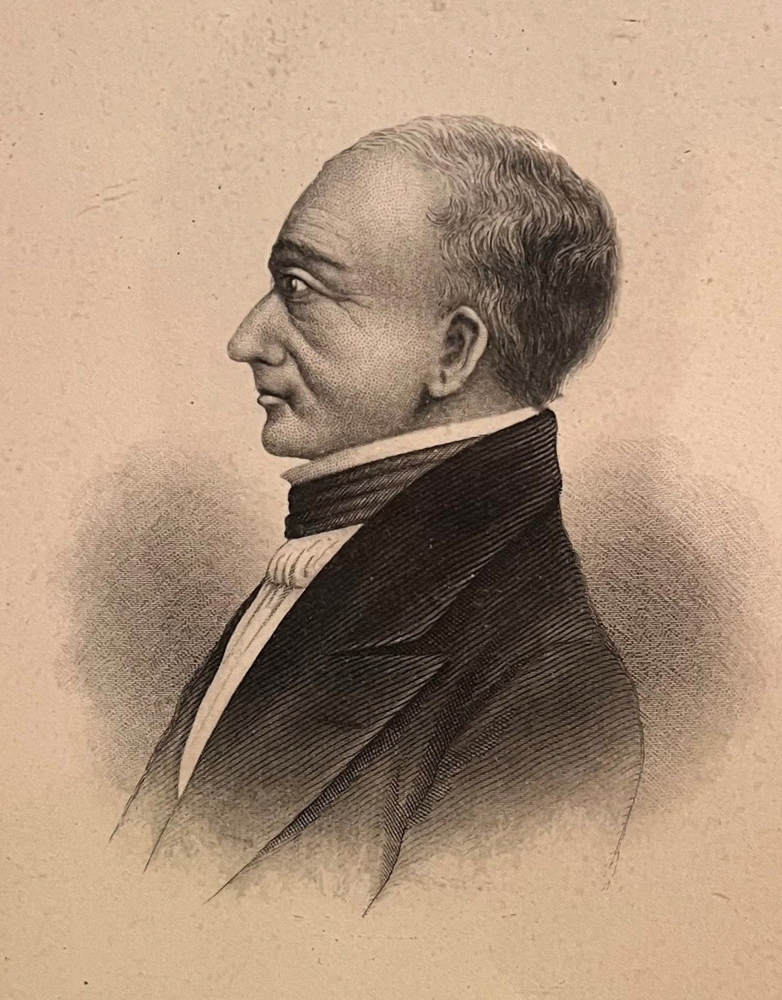

About William Bache
Silhouette Art of Early America is a data visualization project inspired by the
work of William Bache, an early 19th century artist who
created
nearly 2,000 silhouette portraits. These delicate cut-paper profiles capture both likeness
and mystery offering
a unique glimpse into early American identity and artistry. Traveling
throughout the eastern seaboard of the United
States and to the
Caribbean and Cuba,
Bache captured American society from politicians,
everyday men, women, and children. Inexpensive to create these sihouettes were kept as
mementos,
placed inside a locket, added to a family album or just shared with family members.
This project transforms these silhouettes into interactive data, highlighting both named and
unidentified
figures across gender that can be
explored, filtered, and traced. Like many similar silhouette
artisans', one of the techniques used involved carefully tracing a person's profile using a
device called a physiognotrace. The outlines and ‘tracing’ of these profiles is visualized
here.
Any combination of silhouettes can be selected and explored.
This project invites one to explore these portraits not just as silhouettes but as a window
into the image of early America.